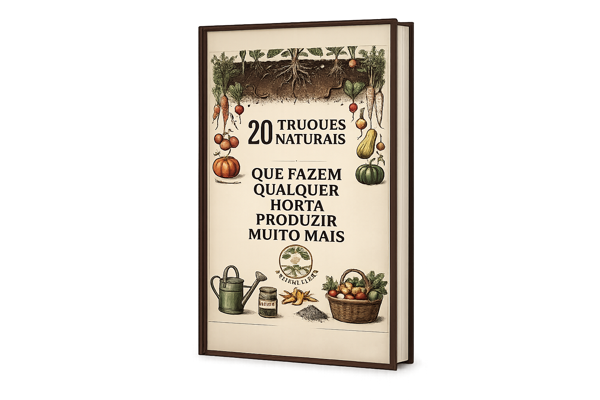

Ebook premium para quem quer colher mais com técnicas naturais
20 Truques Naturais Que Fazem Qualquer Horta Produzir Muito Mais
Descubra técnicas simples utilizadas por agricultores e jardineiros para melhorar o solo, fortalecer as plantas, economizar água e aumentar a produtividade da horta sem depender de químicos caros.
✓ Acesso imediato
✓ Leitura no celular e PC
✓ Conteúdo direto ao ponto
Técnicas naturais
Mais resultado, menos desperdício

Oferta especial
R$ 20
Produtividade
Mais vigor para sua horta
Economia
Menos gastos com soluções industrializadas
Simplicidade
Conteúdo claro, prático e aplicável
Natural
Estratégias sem química pesada
Por que esse ebook faz diferença
Uma página de leitura rápida, mas um efeito gigante na sua horta
O material foi pensado para quem quer sair da tentativa e erro e aplicar estratégias naturais que ajudam a melhorar o cultivo de forma consistente.
Solo mais fértil
Aprenda formas naturais de enriquecer o solo e criar uma base mais viva para o crescimento das plantas.
Melhor uso da água
Descubra ajustes simples que ajudam a reter umidade e evitar desperdício no cultivo.
Plantas mais fortes
Use truques que favorecem vigor, crescimento equilibrado e resposta mais saudável da horta.
Menos gastos
Reduza a dependência de produtos caros aproveitando técnicas naturais e acessíveis.
O que você vai aprender
Um guia direto para quem quer colher mais sem complicação
Em vez de conteúdo genérico, você recebe um material feito para ser útil no mundo real. A proposta é te mostrar caminhos simples que podem ser aplicados mesmo em hortas pequenas.
- Como melhorar a fertilidade do solo naturalmente.
- Como fortalecer as plantas sem química agressiva.
- Como economizar água com práticas inteligentes.
- Como aproveitar melhor resíduos e recursos do dia a dia.
- Como aumentar a produtividade em espaços reduzidos.
- Como evitar erros comuns que atrasam a evolução da horta.
Ideal para quem quer resultado rápido na prática
Leitura leve, aplicação imediata e visual premium para valorizar ainda mais seu produto.
Leitura prática
Conteúdo pensado para ser consumido e aplicado sem enrolação.
Uso imediato
As ideias podem ser adaptadas para a realidade da maioria das hortas domésticas.
Valor percebido
Um material bonito, organizado e com posicionamento de produto premium acessível.
Para quem esse ebook foi feito
Perfeito para quem quer produtividade com autonomia
Não importa se você está começando agora ou já cultiva há algum tempo. O foco é encurtar o caminho até uma horta mais forte e mais eficiente.
Quem está começando
Ideal para quem quer aprender com clareza e evitar erros logo no início do cultivo.
Quem já tentou de tudo
Ótimo para quem quer parar de testar soluções aleatórias e seguir algo mais direcionado.
Quem busca economia
Perfeito para reduzir gastos e usar recursos mais naturais e inteligentes na rotina.
Percepção de valor
Esse tipo de material muda a forma como a pessoa cuida da horta
Depoimentos ilustrativos que ajudam a construir confiança e reforçar o benefício percebido do produto.
★★★★★
“Gostei porque é o tipo de conteúdo que dá para ler e aplicar no mesmo dia. Muito objetivo.”
Mariana Cultivadora doméstica★★★★★
“A proposta transmite clareza. Parece um material simples, mas com muita utilidade prática.”
Carlos Jardinagem em casa★★★★★
“Excelente para quem quer cultivar melhor sem depender de soluções caras e complicadas.”
Patrícia Horta em pequenos espaços
Perguntas frequentes
Tire suas dúvidas antes de comprar
Essas respostas ajudam a remover objeções e deixam a decisão de compra muito mais fácil.
Após a confirmação do pagamento, o acesso ao material digital é liberado para leitura no celular, tablet ou computador.
Sim. O ebook foi pensado para ser simples, claro e útil mesmo para quem ainda está começando a cuidar da própria horta.
Não. Muitas estratégias podem ser adaptadas para vasos, quintais pequenos e hortas compactas.
Sim. Você faz apenas um pagamento e recebe acesso ao material digital.
Comece hoje mesmo
Transforme sua horta com técnicas naturais que você pode aplicar agora
Em vez de continuar testando no escuro, tenha em mãos um material objetivo, bonito e pensado para gerar mais produtividade com menos desperdício.
Acesso imediato ao ebook digital
R$ 20
Garantir meu acesso agora
- Pagamento único
- Compra segura
- Leitura imediata
Pronto para usar na sua landing page com checkout externo.